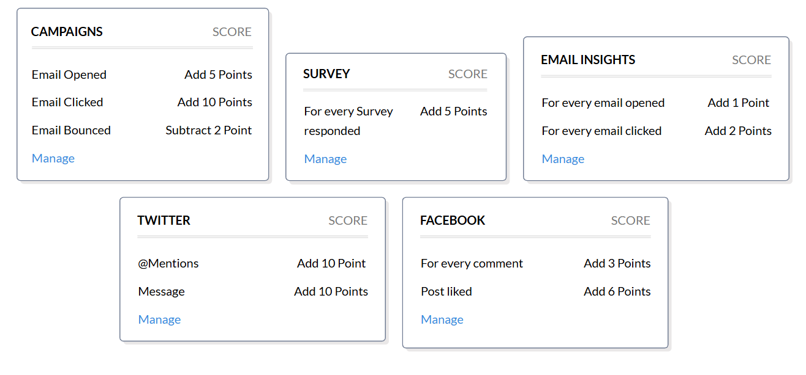
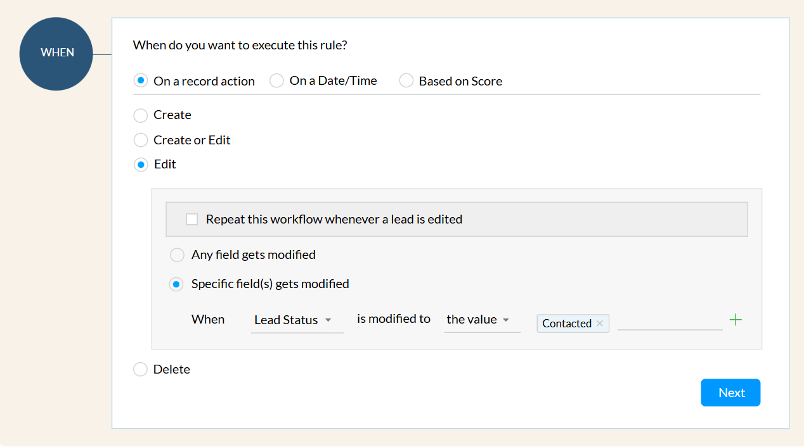
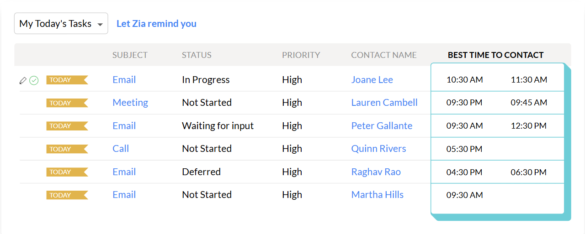
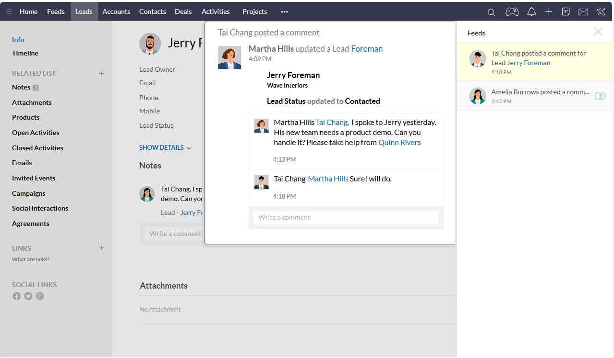
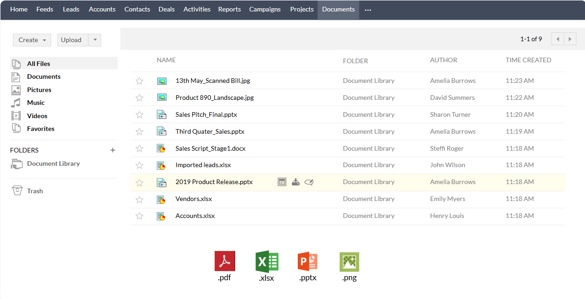
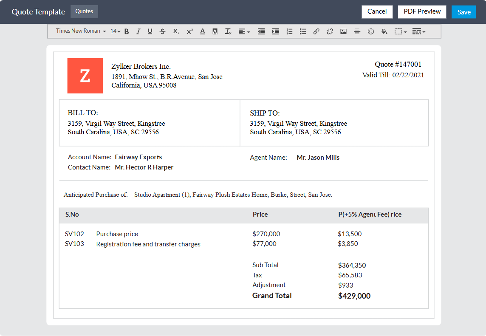
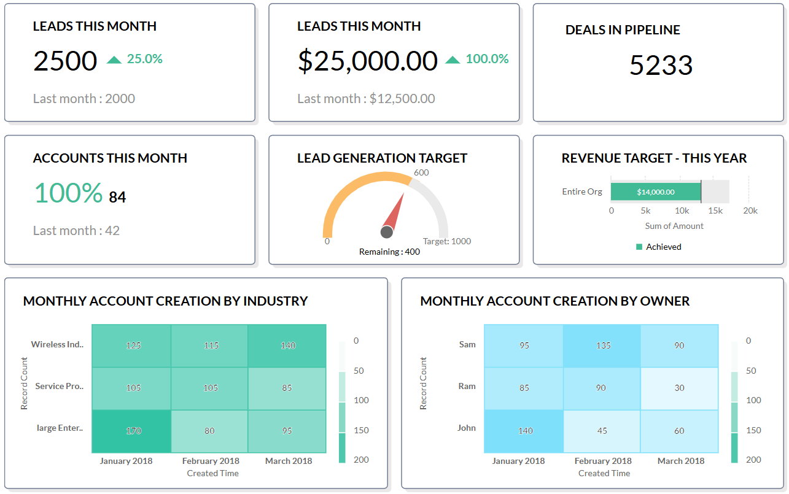
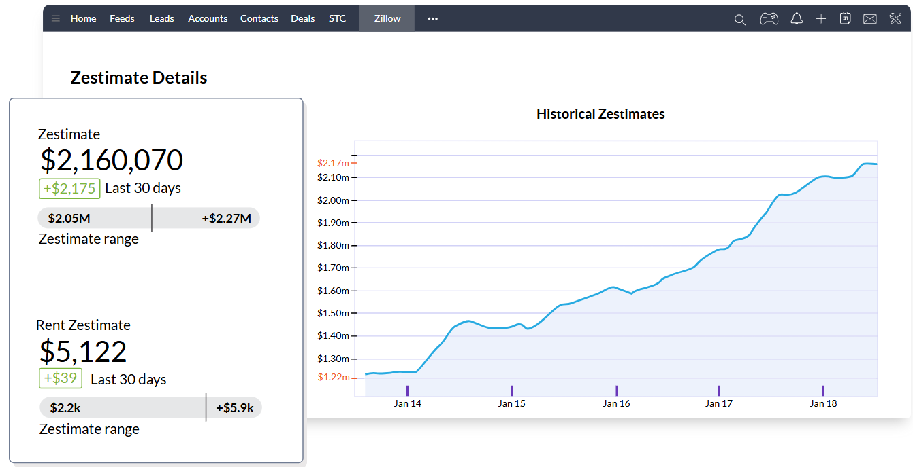

Real estate CRM software for accelerated sales
Built for real estate agencies of all sizes, Zoho CRM offers
cutting-edge sales process management, property management, and
automation for real estate agents, real estate developers, and brokerage
firms. Bring home more deals with the all-in-one real estate CRM
platform that's crafted for your business.
GET A DEMO
What is a real estate CRM software?
Real estate CRM software is a system that helps manage relationships
between buyers, sellers, agents, brokers, developers, and financial
institutions and caters to the multiple requirements of real estate
agents and real estate firms. From managing incoming requests to
preparing price quotes, from selling commercial real-estate to
property management, the real estate CRM system takes
care of the end-to-end process management for real estate agencies.
How is CRM important for realtors?
Real estate is all about building trust, and it's no surprise that 82%
of new property sales are referrals from either existing contacts,
previous clients, family, friends, or relatives. Moreover, when it
comes to real estate businesses, selling or buying is a long process,
with many follow-ups and re-negotiations. In such scenarios,
implementing a real estate CRM software gives realtors an efficient
way to manage contacts, schedule tasks, monitor their pipelines, and
stay organized to build successful relationships and close deals.
Key features of real estate CRM software
Manage leads and track their history
Generate leads from multiple sources like social media, offline
campaigns, business cards, online campaigns and track their stages
until they become an opportunity. Zoho CRM's lead scoring lets you see
which prospects your team needs to focus on. Once an inquiry enters
your pipeline, you can set up automated email responses to nurture
them and drive engagement.

Boost productivity with
powerful automation
Automatically assign leads to sales reps using predefined workflow
rules based on territory, industry, potential deal size, or even in
round robin fashion. Every time a lead enters your CRM pipeline, you
can notify the assigned sales rep and assign tasks and reminders to
followup. Automate your follow up emails, Zoho CRM field updates, and
notifications to give your sales reps time to close more deals.

Artificial Intelligence to improve
your bottom line
Zia gives smart suggestions for the best time and day of the week to
contact each customer, so that you can connect with them immediately.
Zia learns the usage patterns of your team members and makes
personalized automation suggestions so they can complete their routine
tasks faster. Zia also calculates the efficiency of your workflows and
stops you from making mistakes, like sending an email template twice to
the same user.

Keep your team in the loop,
wherever you are.
Collaborate with your team through Feeds, a real-time timeline where you
can discuss deals, collaborate on ideas, and broadcast announcements.
Zoho gives you the power to integrate your chat tools with your CRM.
Create helpful Commands and Bots within your chat tools to pull up CRM
records, reports, and analytics for easy sharing with your teammates.
Send CRM lead approvals and reminders for events or calls on your chat
tool and set up SalesSignals in CRM for new chat notifications.

Centralized Document Management
Zoho CRM gives you centralized access to important documents such as
property details, service reports and transaction documents. There is no
need to dig through all your documents when you just want to send the
latest property document to your leads. The document library
intelligently connects relevant collaterals with the appropriate lead or
deal. You can even have multiple versions of your sales collateral in
the Documents Tab and access the latest draft of the document whenever
you log in.

Easy invoices and bills
Zoho CRM helps you complete your sales cycle by enabling your team to
create and store quotes, invoices, price books, and bills in their
accounts. Manage all your post-sales processes using powerful inventory
management features, and share your quotes and invoices to prospects
through custom email and invoice templates.

Make data-driven decisions
with powerful in-built analytics
With over 40+ prebuilt reports, you can measure every aspect of your sales pipeline - from campaign spending to deal closure. Zoho CRM's Analytics can help you track progress toward your targets, agent activity reports, compensation adjustment and neglected deals in your pipeline. You can setup revenue forecasts based on your territories, measure KPIs using target meters and track lease expirations.

Seamless and powerful integrations
Manage your complete sales cycle from a unified Zoho CRM interface. The free Zillow integration gives you a consolidated view of any property's availability, address, home value, comparable homes, and Zestimates®, directly within Zoho CRM. Also, Zoho Phonebridge lets you choose from over 50 telephony providers like RingCentral, Vonage, and Amazon Connect, and add integrated click-to-call, automated call recording, call logging, and analytics to your Zoho CRM account.
